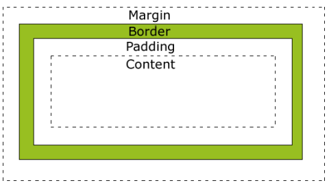

Para iniciar a criação de uma tabela precisa criar a tg <table >
Depois cada linha sera <tr> e cada coluna sera <td> , ou seja:
<table >
<tr>
<td> texto/img </td>
<td> texto/img </td>
</tr>
</table >
Dessa forma a tabela fica assim:
| oiiii | |
| olha o texto qualquer aqui |
como a tag cospan, é uma tag utilizada junto do <td>. Ela serve para indicar quantas colunas/espaços que essa coluna deve ocupar.
por exemplo a img ocupar 2 espacos em vez de 1:
| olha o texto qualquer aqui | oiiiiiiiiiiiiiiiiiiiiiiiiii |
Tambêm da para utilizar a tag width(largura) e a tag height(altura) na tag <table >, para indicar seu tamanho.
Tem como colocar a tag border="solid" (que seria para definir a borda da tabela) dentro da tag <table >. Dentro do css usa a tag border:cor que deseja; assim a tabela ficara com a cor que escolher. Como tambem 1px= um numero px que determina a grossura da tabela.
| oiiii | |
| olha o texto qualquer aqui |
vertical-aling: propriedade ; = é um elemento para alinhar verticalmente qualquer propriedade, dentro do css.
É um alinhamento que fica entre o conteudo e a borda.
Teremos padding-posiçao:quantidade px ;
Vamos ter padding-top (em cima) , padding-bottom (inferior), -right (direita), -left (esquerda) e etc.
margin tem o mesmo funcionamento do padding a diferença é que ela modifica o distanciamento entre a borda e o resta da tela/ elemento mias proximo.
margin:100px 20px 0px 0px; = margin=margens , o primeiro px determina o espaço do topo, o segundo pela direita, e o terceiro pela base e a quarta pela esquerda .